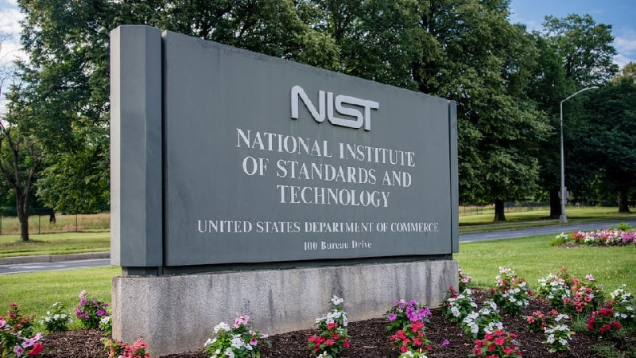
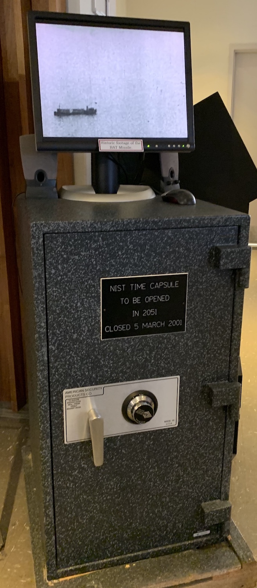

NLP18: NIST Virtual Escape Room
View the project on GitHub.
If you would like to skip the introduction and go straight to playing the game, please enter: HERE.
For 100 years, the National Institute of Standards and Technology has helped to keep U.S. technology at the leading edge. Over the years, NIST has made solid contributions to image processing, DNA diagnostic "chips," smoke detectors, and automated error-correcting software for machine tools. NIST also has had major impact on atomic clocks, X-ray standards for mammography, scanning tunneling microscopy, pollution-control technology, and high-speed dental drills.
Founded on March 3, 1901, as the National Bureau of Standards, NIST was one of the first federal research laboratories. NIST's major accomplishments of the past 100 years and their impact on industry, science and technology, the nation's economy, and the public are described in: NIST at 100: Foundations for Progress.
Fast forwarding to 2020: few members of the New Leader Program (NLP), class #18, decided to implement an escape room game highlighting NIST research topics. Please see below the full list of contributors to this project.
As COVID-19 pandemic affected our lives and our work, the team members decided to take few of the research topics that could be converted into digital stories and create a virtual excape room game.
The NLP Virtual Escape Room brings the player to the year 2051 when the NIST Time Capsule needs to be opened. The player is asked to recover in time for the grand opening (in only 60 minutes) the Time Capsule's keycode. To do so, the player must resolve a chain of riddles that are derived frorm selected NIST research projects.
NIST Time Capsule (located in the NIST Library, near the entrance).
Game creators:
NLP18 team members (in alphabetical order):
- Edgar Garay,
- John L. Harris,
- Michaela Iorga,
- John P. Jones,
- Keith Martin,
- Julie Petrousky,
- Jian Wang.
Escape Room Consultants (in alphabetical order):
- Luís T.A.N. Brandão,
- Meltem Sönmez-Turan
Enter the game:
If you are interested in playing the game, please enter: HERE.